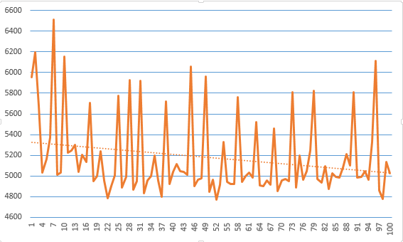

Когда я начинаю заниматься с новым учеником первое что я узнаю это пробовал ли он уже устраиваться на работу и какие тестовые задания ему давали. Таким образом я могу собрать первичную информация об опыте ученика и какие цели он приследует. В основном тестовые задания - это однотипные задачи либо на знания технологий, либо на демонтрацию знаний аглоритмов. Обычно это скучные минипроекты. Их выдают, что бы проверить как человек оформляет код, пишет ли тесты, вообще может ли нормально решать типовые задачи.
По своему опыту я могу сказать. что если Вам прислали тестовое задание, то либо у вас мало опыта, либо контора, куда вы устраиваетесь не очень хорошая. Почему это так. Во первых, у опытного разработчика должны быть свои наработки, проекты, которые можно показать. Во вторых. По тестовому заданию можно сказать только то что человек, что-то может сделать. но не больше. И не факт, что вообще задание выполнять он сам. Например свое первое тестовое, я просил помочь сделать мне друга. )
Месяц назад я стал заниматься с новым учеником. Он тоже уже пробовал устраиваться на работу. Ему выдали тестовое задание.
Это задание привлекло мое внимание по нескольким причинам.
1. Позиция на которую претендовал ученик была Senior developer.
2. Тема тестового - обработка заказов на бирже.
3. Одно из требований - высокая производительность. Время исполнения программы должно быть в районе 6 секунд.
4. Заработная плата на данную поцизию начиналась от 150000 рублей.
То есть в этом задание, есть все: знакомая тема, вызов(смогу ли я).
Условия тестового задания
Я не могу выложить подробный текст задания, что бы не иметь проблем с фирмой. Постараюсь изложить условие своими словами,
что бы оно отображало основную суть задания.
Дано. XML файл. Размер файла 205Mb. Файл состоит из заявок на покупку и продажу акций.
Заявки могут как выставляться, так и сниматься.
tag - AddOrder - заявка высталена.
tag - DeleteOrder - зявка снята.
Пример выставление заявки;
<AddOrder book=\"stock-1\" operation=\"SELL\" price=\"100.50\" volume=\"81\" orderId=\"1\" />
tag - book - идентификатор акции. tag - operation - тип операции, покупка/продажа. tag - price - цена. tag - volume - объем заявки, сколько лотов(акций) купить/продать. tag - id - идентификатор заявки. Требуемые задачи. 1. Распарсить входной файл. 2. Разбить заявки по группам акций. 3. Сделать агрегацию заявок с одинаковой ценой. 4. Сделать сопоставление заявок купли/продажи. Например. Акция 1. Заявку на покупку 10 лотов по цене 32 рубля. Заявка на продажу 10 лотов по цене 30 рублей. Такие заявки должны сопоставится и удалиться из общей группы. Общий принцип. Цена покупки >= цены продажи. И наоборот. Цена продажи <= Цены покупки. 5. Вывести на экран биржевой "стакан" всех групп акций. Необходимые условия. - Использовать только средства входящие в пакет Java SE - Скорость обработки ~ 6 сек. - Качество кода.
Первое с чего я стал решать задачу - это какие части кода можно выполнить параллельно. За счет этого должна уменьшиться скорость выполнения прогарммы. Из задания понятно, что вся программа состоит из двух основных блокой 1. Парсинг входного файла. 2. Обработка полученных данных.
Для парсинга XML обычно использует два разных подхода. - Через потом. Решение SAX, StAX. - В через память. Решение DOM. Т.к. нам нужно быстрее решение, я попробовал сделать это через SAX. Я не стал решать задачу целиком. Вначале я хотел проверить, сколько времени займет парсинг файла. К моему разочарованию время было не приемлемое. SAX - time : 5838 ms. StAX - time : 10280 ms. Оба решения оказались не применимы для данной задачи. Время парсинга файл без группироваки по группам и на объекты было передельно условию задачи.
В своей практике мне переодически нужно решать задачи по парсингу файлов. И одно из требований это скорость. Подобные задачи я решаю самописными парсерами. Т.к. в данном задании данные имеют простую схема сделать парсер такого файла достаточно просто. Огромный минус такого решение - это не универсальность. Если поставщий файла изменит порядок тегов, либо добавить новый, то парсер перестанет работать. Но в данном случаи требуется минимальное время выполнение. Поэтому такое решение может быть использовано.
Считывание файла по строке.
try (BufferedReader br = new BufferedReader(new FileReader("orders.xml"))) {
String line;
while ((line = br.readLine()) != null) {
if (line.startsWith("<A")) {
final Order order = this.parse(line, true);
HashMap<Integer, Order> list = orders.get(order.book);
if (list == null) {
list = new HashMap<Integer, Order>();
orders.put(order.book, list);
}
list.put(order.id, order);
} else if (line.startsWith("<D")) {
final Order order = this.parse(line, false);
orders.get(order.book).remove(order.id);
}
}
}
Парсинг строки.
public Order parse(final String text, boolean add) {
boolean start = false;
int pos = -1;
String[] values = new String[5];
int current = 0;
for (int i=0;i!=text.length();++i) {
if (text.charAt(i) == '\"') {
if (start) {
values[current++] = text.substring(pos+1, i);
start = false;
} else {
start = true;
}
pos = i;
}
}
if (add) {
return new Order(
values[0],
"SELL".equals(values[1]) ? Order.Type.SELL : Order.Type.BUY,
Float.valueOf(values[2]),
Integer.valueOf(values[3]),
Integer.valueOf(values[4])
);
} else {
return new Order(values[0], Order.Type.BUY, 0f, 0, Integer.valueOf(values[1]));
}
}
После прохождение этого состояние на выходе будет карта из составленных объектов Order. Следующим этом нам надо разбирать заявки на группы и производить дальнейшие вычисление в отдельных потоках. Для выполение параллельного вычисления, я использовать ExecuteService и Callable, Future конструкции. Я выбрал именно эти контрукции, т. к. нужно должаться пока все вычисления закончаться.
public void match() throws InterruptedException, ExecutionException {
List<Future<Book>> futures = new ArrayList<>(list.size());
for (final HashMap<Integer, Order> orders : list.values()) {
futures.add(pool.submit(new Callable<Book>() {
@Override
public Book call() throws Exception {
Book book = new Book(orders.values());
book.calculate();
return book;
}
}));
}
for (Future<Book> future : futures) {
future.get();
}
pool.shutdown();
}
Далее в классе Book производится агрегация заявок с одинаковой ценной и сортировка. Причем сортировку выполняет коллекция TreeMap. Поэтому важно очень хорошо разбиратся в коллекциях. После этого я могу получить биржевой стакан.
BUY PRICE SELL
101.3 70
100.9 86
100.8 70
100.7 46
100.6 88
100.5 800
100.4 10698
100.3 123328
100.2 454086
100.1 1024264
100.0 1484290
99.9 469632
99.8 445490
99.7 404565
99.6 365271
99.5 310715
99.4 255846
99.3 205994
99.2 151606
99.1 112117
99.0 76596
98.9 50235
98.8 31844
98.7 20559
98.6 13665
98.5 6389
98.4 3682
98.3 2155
98.2 1109
98.1 778
98.0 339
97.9 193
97.8 8
97.6 44
87 98.8
58 99.0
37 99.2
16 99.3
194 99.4
465 99.5
10885 99.6
122787 99.7
451619 99.8
1029027 99.9
1475579 100.0
465343 100.1
439919 100.2
413034 100.3
367049 100.4
320736 100.5
255797 100.6
199429 100.7
154344 100.8
108765 100.9
79794 101.0
51008 101.1
37026 101.2
20180 101.3
12335 101.4
5603 101.5
4175 101.6
1980 101.7
862 101.8
454 101.9
159 102.0
143 102.1
Далее я решил сделать экперимент и програть прогрумму 100 раз подряд. что бы получить средную выборку. Диграмма ниже. Время выполнение получилось. где то 5200 миллисекунд. Это даже лучше чем требования задания. Но здесь надо еще доделать задание сделать учет соотвествующих позиций. Про этоя буду рассказать во второй части.

Исходный код